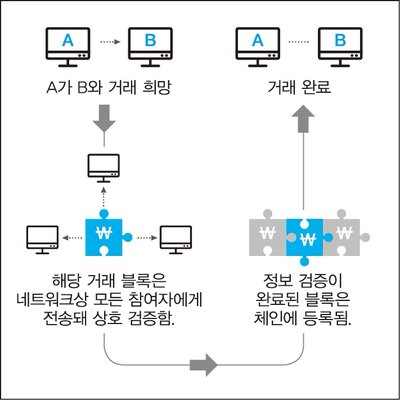

상상해보자. 은행을 거치지 않아도 전세계 누구에게나 돈을 직접 전할 수 있다면 어떨까. 환전과 송금에 드는 수수료를 아낄 수 있을 것 같다. 서버가 필요 없는 클라우드 저장소가 있다면 어떨까. 해커가 공격할 거점이 없어지니 데이터를 더 안전하게 보관할 수 있다. 관리자가 필요 없는 인터넷 주소 시스템은 어떤가. 인터넷 주소를 둘러싸고 핏대 높여 싸울 필요가 없어질 게다.
사실 앞서 말한 사례 3가지는 상상이 아니다. 모두 이미 기술적으로 구현돼 있다. 이 모든 일을 가능케 한 핵심 기술이 ‘블록체인(block chain)’이다.
블록체인은 비트코인에 관해 얘기할 때 가장 많이 언급된다. 맨 처음 예로 든 ‘은행 없는 글로벌 금융 시스템’이 바로 비트코인이다. 가상화폐 비트코인은 세상에 나타난 지 5년 만에 시가총액으로 세계 100대 화폐 안에 들어갈 정도로 성장했다. 이 비트코인이 세상에 나올 수 있던 이유도 블록체인 덕분이다.
